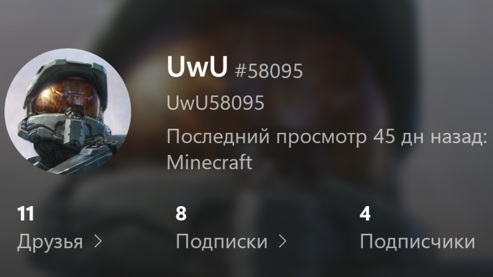
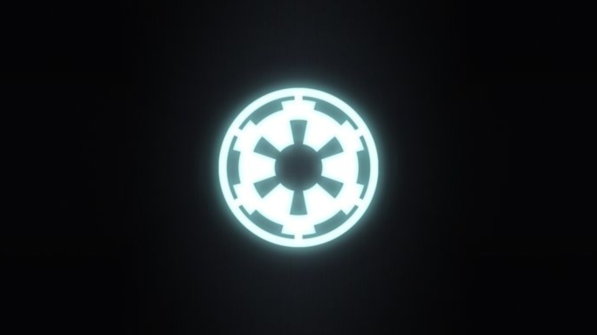

Война с Уву
Война с Уву
| Противники | |
|

UwU58095 при поддержке:  Шкаф
Шкаф
|
 ОПА
ОПА Республика при поддержке: Держава |
| Командующие | |
| UwU58095 |
Китобой Кактус |
| Силы сторон | |
| 1 человек | ±5 человек |
История
7-8 марта Уву приходит в SafCraft и возмущается, что дракон убит. Он уже в энде вместе с амогусом и еще кем-то, лутает элитры.
Первое нападение на Орден
8 марта Уву обвиняет Орден в креативе, так как он якобы нашёл шалкер с большим количеством золотых зачарованными яблоками.
Возможно он сам и подкинул этот шалкер, возможно это и не он. Но этот шалкер определённо не Ордена, так как никто из Ордена не был в городах Энда и не мог достать шалкер и шаблоны для брони из Энда. А вот жители Республики как раз таки, как сказано выше, были там и могли добыть эти вещи.
Одновременно с этим он взрывает вещи Ананаса и вещи Пелимешечки. После чего Китобой объявляет карантин на территории Ордена.
В этот же день Ананас находит территории Республики и там Уву уже добывает незеритовое улучшение у пингвинов. Бегает в портал в ад, умирает и тд.
Второе нападение на Орден
Где-то 9-10 марта Уву говорит Китобою в чате Майнкрафта, что посетит Орден. Китобой говорит ему, что помещение Ордена запрещено. Поэтому посещение Ордена Уву воспринялось Китобоем как нападение на Орден. Китобой начинает драку с Уву и проигрывает. Уву сжигает его вещи.
Вступление Республики и Державы
10 марта Кактус узнает, что уву нашёл бедрок, и обвиняет его в сокрытии бедрока от администрации сервера.
В этот же день Кактус и Мекус планируют убить Уву, забрать его ресы и отдать Китобою. Это было вызванно тем, что Уву, будучи гражданином Республики, портил её репутацию мирной страны.
Приглашают в этой операции участвовать и Орден. По словам Кактуса, была кодовая фраза к началу операции: "Выполнить приказ 66".
Был план убить Уву в аду, но Кактус решил это сделать в обычном мире. Уву заранее узнал об этом плане и был готов к нападению, а также он обратился за помощью к Ордену, мол был не прав, и просил его принять. Шкаф был согласен его принять, а Китобой согласился дабы вытереться в доверие.
Во время этой операции Уву взорвал часть Республики, в результате этого был найден второй бедрок, который стоял под столом зачарований. После чего Уву улетел на элитрах.
Заключение
Предположительно (у меня нет точной информации о дате) в этот же день 10 марта Уву банят по причине "подозрение в читах". Из-за чего Уву так и не смог вступить в Орден. Достоверных доказательств читов у Уву нет, есть только косвенные, но их можно объяснить его скилом, или что бедрок и шалкер были не его.
До этого Уву успел пообещать отдать свои вещи Шкафу. Из-за этого, а также других причин Шкаф позже взрывает дом Уву в Республике.
Уже на своём сервере Шкаф окончательно принимает Уву, но через время Уву покидает сервер, так как ему скучно.

Мнения об Уву
Негативное
Негативное мнение об Уву сложилось прежде всего у тех, кто против него воевал, а именно: жители Республики и Китобой. А также у тех, кто случайно попал под раздачу, например те-же самые Ананас и Пелимешечка.
Положительное
Положительное мнение об Уву сложилось прежде всего у Шкафа, так как ему понравился человек, который в одиночку пошёл и против Республики, и против Китобоя. По мнению Шкафа, он терроризировал плохую часть Ордена, а значит он делал правильно. Также Шкаф напрямую не участвовал в этих событиях и узнал он о подробностях от самого Уву, что и могло сказаться на его мнении.